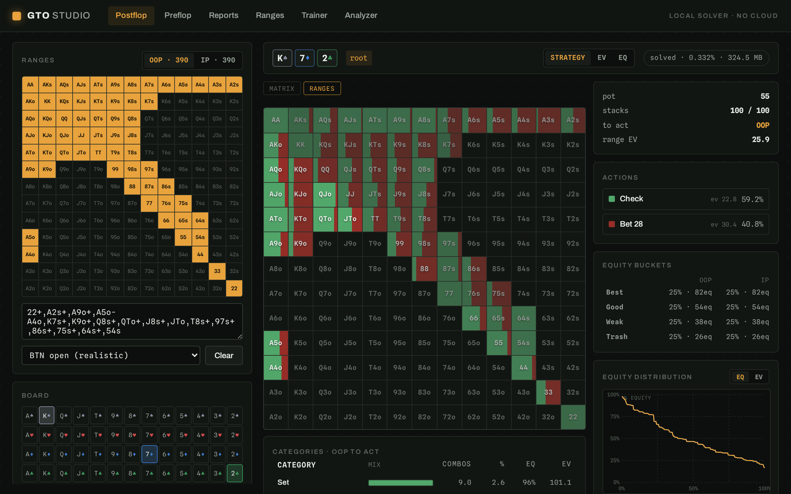
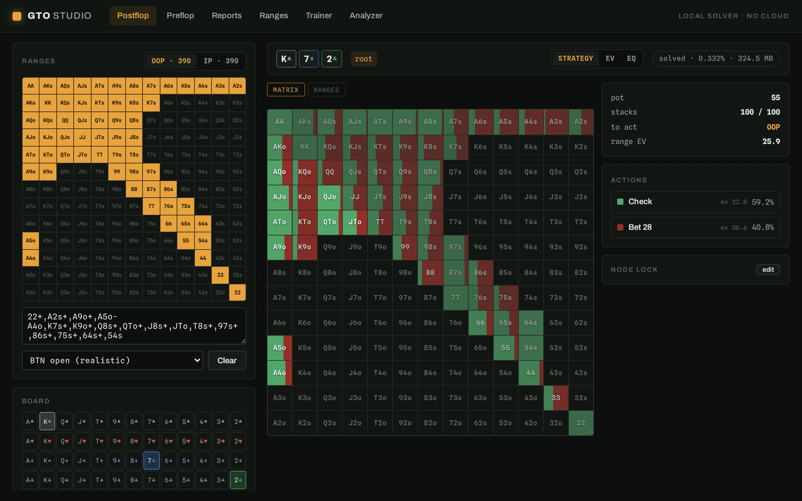
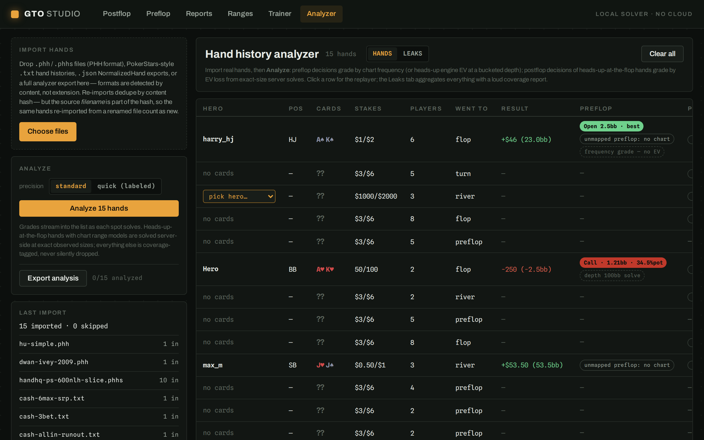
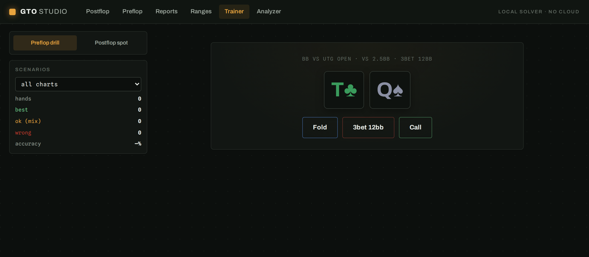

Danny Koz
GTO Studio
A local, end-to-end no-limit hold'em solver and study suite — GTO-Wizard-style studying without the subscription, the cloud, or the caps. Configure any spot, solve it on your own CPU in seconds, browse the strategy, import your real hands, find your leaks, and drill them. Everything runs on localhost; your hands never leave your machine.

{kind=link}

{kind=link}

What it does
- Postflop solving — arbitrary heads-up spots (ranges, board, stacks, rake, bet-size trees) solved live by discounted CFR, with a strategy-matrix browser: action mixes per hand class, per-combo EV/EQ, turn/river runouts.
- Ranges analytics — made-hand & draw categories with documented boundaries, strategy-by-category tables, equity buckets, equity distribution curves with an EV overlay, and category filters painted onto the matrix.
- Node locking — force any strategy at any node (custom mix or player-type presets) and re-solve to see the exploitative adjustments.
- Aggregated reports — solve a texture-stratified flop subset (25/49/95/all 1755), then sort, filter, and group by texture to build heuristics; runout reports aggregate every turn/river card inside a solution.
- Preflop engine — a built-in CFR+ engine on the 169 hand classes with exact card-removal, validated against published 10bb push/fold Nash, now exposing per-class EVs for grading.
- 6-max chart library — editable position-by-position baseline charts; blind-battle charts replaceable by the solver's own output.
- Trainer — preflop chart drills and full postflop spot drills, every decision graded by EV loss with per-action EV reveals.
- Hand history analyzer — import real hands (PHH or PokerStars-style text, auto-detected), grade every decision vs GTO, browse a replayer with per-decision GTO mixes, and get a leaks dashboard: bb/100 lost by position, street, and spot family, with the biggest blunders one click from a trainer drill of that exact leak.

Why it's different
- Local-first. No subscription, no upload caps, no cloud. The analyzer processes complete hand histories without them ever leaving your machine.
- Honest EV. Your observed bet sizes are injected into the solve tree exactly — no silent nearest-size snapping. When memory forces an approximation, the grade carries a badge saying so and by how much, and the dashboard shows a coverage report: what % of decisions were graded and why the rest were skipped.
- A closed loop. Analyzer leaks become trainer drills of those exact spots, with retest deltas — study what you actually misplay, not generic scenarios.
- Grade against your gameplan. Chart edits are first-class: preflop grading honors your range overlays, so the analyzer can measure deviation from your strategy, not just equilibrium.
Under the hood
Rust workspace (axum API, a from-scratch preflop CFR+ engine, and the open-source
postflop-solver DCFR engine) + SvelteKit 2 / Svelte 5 frontend
with zero runtime npm dependencies. ~470 automated tests across both sides, every
merge gated on the full suite. AGPL-3.0. It's a desktop-class tool that runs on
localhost rather than a hosted demo — this page is the tour.